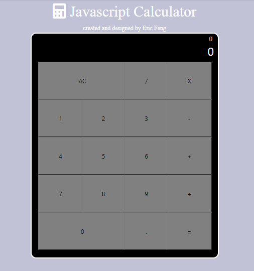

Built With: Python Pytorch
Proposed pipeline suppliments datasets with sparse datapoints with a generative adversarial network. With the newly generated datapoints, it can be utilized in tandem with the original dataset in order to create a more verbose dataset that can be used to increase the accuracy of image classification models. Here is the link for the github repository: https://github.com/williamxi1/CS229Project. Read the following paper here: https://www.overleaf.com/read/nnpbcmvnsjwd